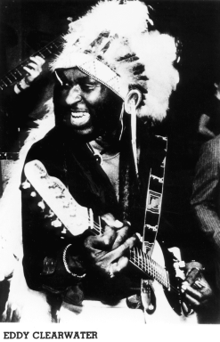

Eddy "The Chief" Clearwater

Eddy "The Chief" Clearwater считается одним из самых ярких, одаренных исполнителей, представляющих Чикагскую блюзовую сцену. Eddy записывал синглы в совершенно разных музыкальных стилях, таких как: country & western для публики Нешвилля; рокабилли и старый добрый рок-н-ролл в стиле Chuk Berry; а также великолепные блюзы Чикагской школы. В его сценическом гардеробе есть и ковбойская шляпа для выступлений в Чикаго, и индейский головной убор, из-за которого Eddy как раз и приобрел кличку "Вождь" ("The Chief") для концертов в Бостоне. У него есть даже красная кепка на тот случай, если нужно отправиться на один из европейских блюзовых фестивалей.Clearwater, чье настоящее имя Eddy Hurrington, вырос в городе Макон, Миссисипи, слушая дельта-блюз, а также настоящий кантри. Он родился 10 января 1935 года. В тринадцатилетнем возрасте Eddy переехал в Бирмингем, Алабама, где вскоре стал играть на гитаре в церкви. Однажды Eddy зашел в музыкальный магазин и купил там кучу книг, среди которых был самоучитель игры на гитаре. Он научился брать некоторые аккорды и тут же выучил первую песню – Twinkle, Twinkle Little Star. Это была одна из немногих композиций, которую музыкант играл по нотам. В основном, юноша занимался тем, что слушал местное радио и просто подбирал понравившиеся ему мотивы., "под руку попадались" песни в стиле кантри – Chet Atkins, Red Foley, Hank Williams. А из блюзменов – John Lee Hooker, Muddy Waters (раннего периода). Также Eddy слушал много записей в стиле госпел – Mahalia Jackson и пр. Clearwater до сих пор исполняет госпелы, когда оказывается в южных районах Чикаго, однако в 1953 году он ушел от этого направления. Сердце его просило блюза. Вскоре под прозвищем "Гитарист Eddy" он создал свою собственную команду, которая периодически выступала в южных, а также вестсайдских блюзовых тавернах. В то время Eddy испытал, должно быть, самое сильное музыкальное потрясение – он услышал песни Chuk Berry. Это было невероятно: гитарист-левша, да еще акробат-виртуоз, владеющий уникальными фокусами, вплоть до игры "задом наперед", Подражая кумиру, Eddy заработал себе репутацию великолепного шоумена, обладающего таким гигантским репертуаром, что может запросто выкрутиться из любой ситуации.Выступать на публике Clearwater начал в качестве гитариста разных госпел-составов. "Тогда их было просто миллионы", - вспоминает музыкант. – "Я играл с Five Blind Boys Of Alabama, Northleet Brothers и другими такого же рода группами". А в начале 60-х Eddy Clearwater работал в одном чикагском коллективе, название которого особенно порадует и позабавит экстремально настроенную молодежь – "Amando’s Chili Peppers".
Первым синглом музыканта стала композиция "Boogie Woogie Baby", выпущенная на лейбле Atomic-H в 1958 году. После записи множества синглов и постоянных выступлений в чикагских ночных клубах на протяжении двадцати лет, Eddy Clearwater нашел свою фирменную марку: утиная походка в стиле Chuk Berry и волшебный вэстсайдский блюз, "навеянный Дядей Сэмом".На протяжении 60-х и 70-х годов Clearwater просто гипнотизировал публику своей гитарной акробатикой. Некоторые "пуритане" даже называли его "самым похожим имитатором Chuk Berry". Eddy Clearwater был тайным сокровищем Чикаго до тех пор, пока его слава не вышла за границы Соединенных Штатов. Во время своего первого тура по Европе Eddy появился на британском телеканале BBC, а также сделал несколько записей для французской фирмы MCM. И тут же последовали другие предложения о записи. Его первый полноценный альбом для американского рынка под названием "The Chief" вышел на Чикагском лейбле Rooster Blues в 1980 году и был высоко оценен критиками. Это очень помогло укреплению репутации Eddy как бесценного исполнителя и сочинителя блюза. Его следующий альбом, записанный для британского лейбла Red Lightin’, заработал награду W.C. Handy Blues Award в номинации "Лучший блюзовый альбом, импортируемый в другие страны". Учредителем этой награды является The Blues Foundation.
В течении 80-х годов, гастролируя от одного до другого побережья Соединенных Штатов, Eddy находит время, чтобы выступать хэдлайнером разных блюзовых фестивалей в Амстердаме, Чикаго, Мехико и Сан-Франциско. В июне 1987 года Clearwater осуществил свою давнюю мечту – гастроли по шести странам Западной Африки под покровительством правительства Соединенных Штатов. Выпуск нового альбома Клирвотера "Real Good Time-Live!" еще раз доказал, что Eddy "The Chief" Clearwater – великолепный, классический блюзовый музыкант, который может с равной самоотдачей играть как развеселую музыку для вечеринок, так и оригинальный меланхоличный блюз.Американские музыкальные критики уже давно окрестили Eddy "многоликим и динамичным шоуменом, одним из самых самобытных исполнителей, которых дала Чикагская блюзовая сцена". Музыковеды по достоинству оценили в нем все: и удивительное человеческое обаяние, и виртуозное владение своим возлюбленным другом – гитарой Fender Telecaster, которая позволяет музыканту выдавать самые запоминающиеся блюзовые соло.
Дискография
-
1979 Black Night (live)
-
1980 The Chief
-
1981 Two Times Nine
-
1986 Flimdoozie
-
1989 Blues Hang Out
-
1990 Real Good Time: Live!
-
1992 Help Yourself
-
1995 Boogie My Blues Away
-
1996 Mean Case Of The Blues
-
1998 Cool Blues Walk
-
1999 Chicago Daily Blues
-
1999 Chicago Blues Session, Vol. 23
-
1999 Live At The Kingston Mines Chicago, 1978